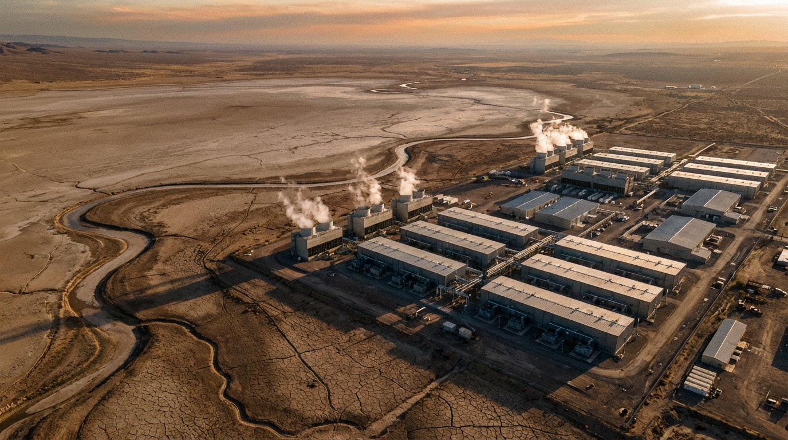

Every AI Image You Generate Drinks a Shot Glass of Water. Globally, That's 312 to 764 Billion Liters.
A December 2025 paper quantified what tech companies won't: the full water cost of AI, including the power plants. Google reports Scope 2 carbon from those same plants. It refuses to report their water.

One billion gallons.
That's how much water a single Google data center in Council Bluffs, Iowa consumed in a single year, across all its workloads: Search, Gmail, YouTube, Cloud, and AI combined. Enough to supply every residential tap in the state for five days. Google disclosed this figure in its 2024 Environmental Report, in a table on page 47, without commentary.
Then it got interesting. Researchers asked Google to report the indirect water consumption from the power plants generating electricity for those same data centers. Google declined. Its stated reason: the company "does not fully control water consumption at power plants."
The De Vries Paper
In December 2025, Alex de Vries published "The Carbon and Water Footprints of Data Centers and What This Could Mean for Artificial Intelligence" in Patterns, a peer-reviewed Cell Press journal. It attempted something no prior study had: a complete accounting of AI's water footprint, both direct and indirect.
Direct water is what a data center drinks to cool itself. Evaporative cooling towers, measured by a metric called WUE. Google, Microsoft, and Meta all disclose this number. It looks manageable.
Indirect water is the part that doesn't appear in any sustainability report. Thermoelectric power plants (coal, gas, nuclear) consume roughly 2 liters of water per kilowatt-hour generated. When a data center draws 100 MW from the grid, the power plant supplying it consumes water that no tech company currently discloses.
De Vries combined both streams and arrived at a range: AI systems consumed between 312.5 and 764.6 billion liters of water globally in 2025. That range is wide because two inputs are uncertain: AI's exact share of total data center electricity (estimated at 10-33%) and the indirect water coefficient (which varies from near-zero for wind and solar to 2.5 L/kWh for nuclear). The low end assumes efficient grids and conservative AI share; the high end assumes coal-heavy grids and aggressive AI growth. Even the low end is staggering, roughly comparable to global bottled water consumption, though in the context of total freshwater withdrawal (roughly 4 trillion cubic meters annually for agriculture, industry, and municipal use), it remains a small fraction.
De Vries' central finding: the indirect water footprint of data centers is 3 to 4 times larger than the direct footprint, yet it remains almost entirely unreported.
Scale
Four sources have attempted to quantify data center water consumption. Their scopes differ, so the figures are not directly comparable, but lined up they reveal what's reported and what isn't.
| Source | Direct Water | Indirect Water | Scope |
|---|---|---|---|
| Google (2024) | 24.2B liters | Not reported | All Google data centers (all workloads) |
| Lawrence Berkeley (2024) | 64B liters | 799B liters | All U.S. data centers (all workloads) |
| De Vries (2025) | ~78-191B liters | ~234-573B liters | Global AI workloads only |
| Meta (2024) | 5.7B liters (est.) | Not reported | All Meta data centers (all workloads) |
Note: These figures cover different populations and time periods. Years indicate report publication date; underlying data may cover prior fiscal years. Google and Meta report company-wide across all workloads; Lawrence Berkeley covers the entire U.S. data center fleet; De Vries isolates AI specifically. They cannot be summed or directly compared.
Lawrence Berkeley National Laboratory's 2024 federal assessment provides the clearest U.S. picture for the full data center industry (not just AI): 64 billion liters direct, 799 billion liters indirect for all American data centers. That's a ratio of roughly 1:12. For every liter a data center drinks directly, twelve more evaporate at the power plant feeding it. And Lawrence Berkeley projects this will double or quadruple by 2028.
What a Prompt Costs
Per-prompt estimates vary depending on who's counting and what they're counting, and all should be treated as order-of-magnitude figures, not precision measurements. Measuring direct cooling only, academic estimates put a single text query at about 0.26 to 0.32 milliliters. A rounding error. Barely a damp thumbprint on a server rack.
Include indirect water from power generation, and the number jumps to roughly 1.5 liters per 100-word response, based on scaling De Vries' direct estimates by the 1:3-4 indirect ratio. That's a water bottle. For a paragraph. Actual consumption varies by model, hardware, cooling design, ambient climate, and grid mix.
Image generation hits harder. A single AI-generated image requires an estimated 15 to 60 milliliters, roughly half a shot glass to a full shot glass, or 50 to 100 times more than a text prompt. (These estimates scale from published direct water figures; no company has released verified per-image water data.) Multimodal AI isn't just computationally expensive. It's wet.
Reasoning models make it worse. Chain-of-thought architectures like OpenAI's o1 and o3 keep GPUs active for extended inference passes, generating more heat per answer. Smarter AI is thirstier AI. Nobody has published precise per-token water costs for reasoning models, but De Vries notes the trend is unambiguous: inference time is climbing, and water consumption scales with it.
The Selective Transparency
Follow the accounting.
Under the GHG Protocol, the international standard for greenhouse gas reporting, Scope 2 emissions cover indirect emissions from purchased electricity. Google dutifully reports these. In 2024, Google disclosed 14.3 million tonnes of total greenhouse gas emissions, the majority from Scope 2, generated at power plants Google does not own, does not operate, and does not "fully control."
Water at those same power plants? Doesn't count, apparently.
No water protocol equivalent to the GHG Protocol exists, which is technically true and strategically convenient. Google isn't breaking a rule. It's demonstrating that it can report indirect resource consumption when a standard requires it, and choosing not to when one doesn't. Because no mandatory water reporting framework exists for indirect consumption, every major tech company does the same thing: report direct cooling water, ignore the 75% that happens upstream.
Microsoft, to its credit, at least published estimated water intensity per workload in its 2024 Environmental Data report. Google publishes total facility-level WUE but won't disaggregate AI workloads from general compute. Meta publishes aggregate consumption without distinguishing AI training from social media serving. None of them report indirect water.
Geography Is Destiny
Not all water is fungible. A liter consumed in rainy Oregon has different consequences than a liter consumed in drought-stricken Arizona. De Vries calculates that data centers in arid climates use 3 to 5 times more water per query than those in cool, humid locations. Evaporative cooling works harder when ambient air is dry.
This matters because data centers concentrate where land is cheap and power is available, which often means arid Western states. Google's Iowa facility sits on one of the most productive aquifer systems in the Midwest. Prince George's County, Maryland paused all data center development after residents organized against a proposed conversion of an abandoned mall. Polling by Heatmap and MultiState found that data centers are less popular than gas plants, wind farms, nuclear reactors, and battery storage facilities. Less popular than nuclear. In America. That's a genuinely remarkable PR failure.
The "Water Positive" Counterargument
Tech companies have an answer for this, and it deserves to be stated at full strength.
Google has pledged to be "120% water positive" by 2030, meaning it will replenish 20% more water than it consumes. Microsoft has made a similar pledge. Meta restored 1.5 billion gallons of water in 2024 and claims to have achieved "net zero" water consumption. These commitments involve funding watershed restoration, wetland rehabilitation, agricultural water efficiency, and aquifer recharge projects.
This is a real investment. Meta's 1.5 billion gallons isn't fictitious. Google's watershed projects in drought-affected regions employ hydrologists and produce measurable ecological outcomes. Dismissing these programs as greenwashing ignores the genuine engineering and capital behind them.
But water positive has a geography problem that carbon offsets don't.
Carbon is globally fungible. A tonne of CO₂ removed in Brazil has the same atmospheric effect as a tonne removed in Germany. Water is radically local. When Google's Iowa data center drinks a billion gallons from the Missouri River alluvial aquifer, funding mangrove restoration in the Philippines doesn't refill that aquifer. When Meta's data center in New Mexico draws from the Rio Grande basin during a multi-year drought, sponsoring wetland rehabilitation in Oregon doesn't reduce the strain on New Mexico ranchers' wells.
And here's the accounting problem: if Google won't even report indirect water consumption, the 75% of its footprint that happens at power plants, then the denominator of "water positive" is wrong. You can't claim to replenish 120% of what you consume when you're only measuring 25% of your consumption.
Limitations
De Vries' 312.5-764.6 billion liter range carries substantial uncertainty. AI's share of total data center electricity consumption is estimated, not measured; no hyperscaler publishes workload-level energy breakdowns. The 2-liters-per-kWh indirect water coefficient is a global average that varies significantly by power source; nuclear and coal plants are water-heavy, while wind and solar use almost none. As the grid decarbonizes, indirect water per kWh should decline, but data centers are also driving construction of new gas peaker plants in several states, partially offsetting that trend.
Per-prompt water estimates (1.5L per 100-word response including indirect) should be treated as order-of-magnitude figures, not precision measurements. Actual consumption varies by model architecture, hardware generation, cooling system design, ambient climate, and grid electricity mix. Nobody has published verified per-inference water metrics. That's not an oversight. It's a competitive advantage.
This analysis also cannot determine whether data center water consumption is net harmful to any specific watershed. The answer depends entirely on local hydrology, competing demands, and the temporal pattern of withdrawal. That level of specificity would require facility-level study, not global aggregation.
Bottom Line
None of this means AI shouldn't use water. AI-powered medical diagnostics, translation services, accessibility tools, and educational platforms deliver genuine value. It isn't whether to consume water for computation. It's whether the industry should measure and report honestly.
AI has a water problem of the same magnitude as its carbon problem, and it's getting less attention by an order of magnitude. A peer-reviewed paper in December 2025 quantified what the industry has known and not reported: the full footprint is 3 to 4 times what appears in any sustainability report. This isn't about individual guilt for your prompts. It's about corporate reporting that systematically omits 75% of the number.
Trend lines aren't encouraging. Reasoning models use more compute per answer, not less. Video generation and multimodal AI multiply water cost per interaction. Data centers keep migrating to regions with water stress: Arizona, Texas, the arid Intermountain West, where cheap land and friendly permitting come with strained aquifers and competing agricultural demand. And no regulatory framework for indirect water reporting exists — the GHG Protocol took decades to establish, and a water equivalent, call it "Scope 2 Water," hasn't even started.
Fixing this isn't mysterious. Report indirect water. Disaggregate AI workloads from general compute. Match replenishment to the watersheds where consumption occurs, not to whichever watershed offers the cheapest offset. And build the missing standard so that reporting becomes mandatory, not voluntary.
The grid doesn't care about your press release. And neither does the aquifer.
Sources
- De Vries, A., "The Carbon and Water Footprints of Data Centers and What This Could Mean for Artificial Intelligence," Patterns, December 17, 2025 — 312.5-764.6B liters, direct vs indirect breakdown, per-prompt estimates, multimodal multiplier
- Lawrence Berkeley National Laboratory, "United States Data Center Energy Usage Report," 2024 — 17B gallons direct, 211B gallons indirect (U.S. data centers), doubling/quadrupling projections by 2028
- Google, "2024 Environmental Report" (covering 2023 fiscal year data) — 6.4B gallons total, 95% data center use, Council Bluffs 1B gallon single-facility disclosure, indirect water reporting refusal
- Meta, "2024 Sustainability Report" — 1.5 billion gallon water restoration, net-zero water methodology, 18 watershed projects in high/medium water-stress regions
- MultiState, "Data Centers Confront Local Opposition Across America," October 2025 — Polling data, Prince George's County moratorium, community resistance patterns